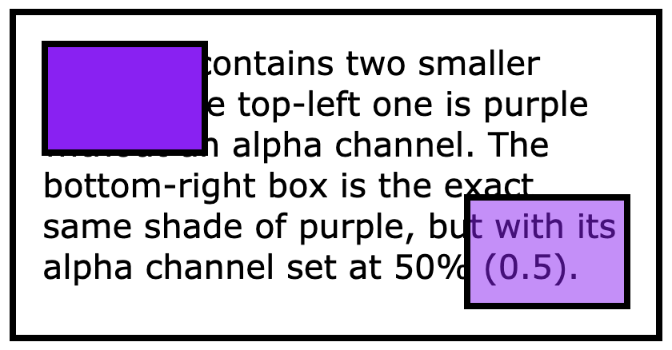

Colors are represented in digital form as a collection of numbers, each representing the strength or intensity level of a given component of the color. Each of these components is called a channel. In a typical image file, the color channels describe how much red, green, and blue are used to make up the final color. To represent a color through which the background can be seen to some extent, a fourth channel is added to the color: the alpha channel. The alpha channel specifies how opaque the color is.
For example, the color #8921F2 (also described as rgb(137, 33, 242) or hsl(270, 89%, 54)) is a nice shade of purple. Below you see a small box of that color in the top-left corner and a box of the same color but with an alpha channel set at 0.5 (50% opacity). The two boxes are drawn on top of a paragraph of text.

As you can see, the color without an alpha channel completely blocks the background text, while the box with the alpha channel leaves it visible through the purple background color.